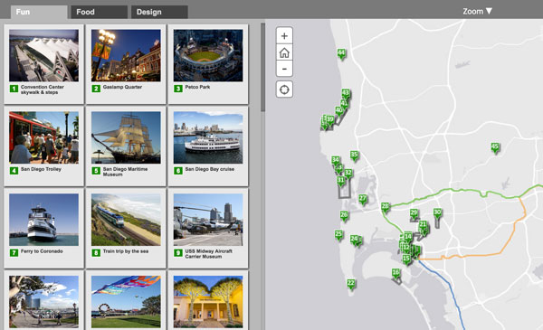
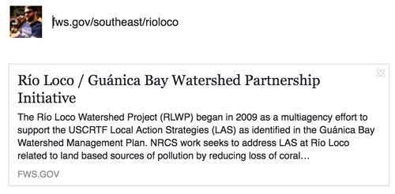
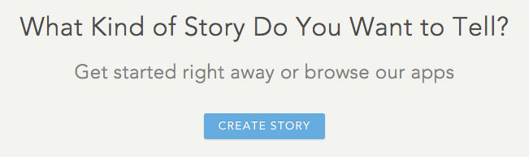
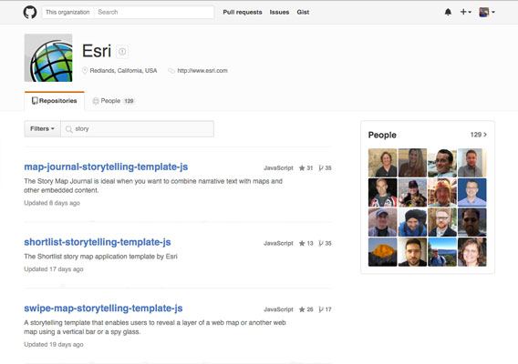
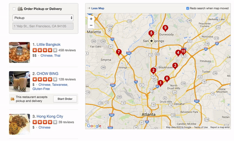
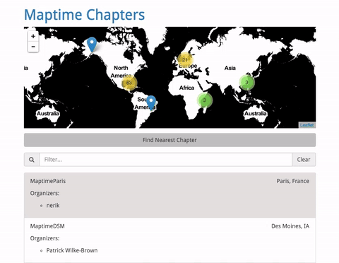
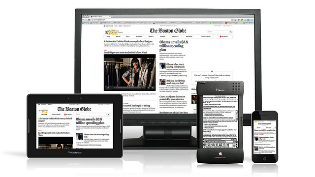

Story Maps
Using Maps to Craft User Interfaces
May 17, 2016
Cookeville, TN
Slides: bit.ly/1R5mrdS

Roy Hewitt
Job: Regional Web Developer
Background: Biology, GIS
Agenda
- What is a Story Map?
- Setting yourself up for success
- Our approach in the Southeast
- Challenges
- Examples
- Resources
What is a Story Map?
“Story maps use geography as a means of organizing and presenting information. They tell the story of a place, event, issue, trend, or pattern in a geographic context. They combine interactive maps with other rich content—text, photos, video, and audio—within user experiences that are basic and intuitive.”— ESRI, emphasis is mine.
Why Build a Story Map?
- Where matters; nothing happens in a vacuum
- Wrap an analysis in context for lay audiences
- Let your audience explore your data on their own terms
- Engage new audiences

What Makes a Good Story Map?
- Know your audience
- Write in plain language
- Know what’s important
- A good user experience
User Experience
User experience (UX) focuses on having a deep understanding of users, what they need, what they value, their abilities, and also their limitations. —usability.gov
Know Your Audience
Content (text, iconography, etc.) and interaction should be targeted at the lowest common denominator. Don't assume GIS proficiency; offer more than one way to access information.
Know What's Important
If you're making a story map to share photos from a trip ensure the size of the photos is relative to their importance. It doesn't make sense to have a full screen map with tiny thumbnail images.
It better be Easy

If your users can't find the information they're after very quickly they'll leave your website as fast as they can for the safe haven that is internet cat videos.
Hack your Maps
“Have you ever taken apart a map? Worked with a map as a critical part of your design?” - Young Hahn, ‘Hack Your Maps’
Maps are only part of the equation.
Setting Yourself up for Success
Story map design principles to live by.
Many of the following suggestions come from a 2012 blog post by GIS consultant Brian Timoney.
Focus
Magnification by TheGiantVermin CC BY NC ND
Rather than trying to create a single map that does everything, create several maps that tell one story well.
Concentrate on SEO

Search Engine Optimization (SEO) is extremely important. The majority of your users will find your content through a Google Search, not through ten levels of nested navigation on your Agency's homepage.
Mimic Google Search

Everyone is extremely well trained in the use of a search box. Make the same data that is available on the map search-able through an autocomplete text input.
No One Cares About Your Database Schema
You might have set up the best relational database schema imagineable, but your users don't care. They don't want to type street number, name, city and/or state into different text inputs. Provide a single text input that searches across the most fields that makes sense.
Take Care in Setting Defaults

Thinking about adding a third basemap option? A fifth feature layer for users to toggle on and off? According to analytics data from Denver only 2% of users toggle a different basemap.
Social Media Integration
Let other people advertise for you. Including some simple metadata on your page can greatly increase the likelyhood others will share your story map on social media. This metadata also increases the liklihood that someone will click on your content when it shows up in their feed.
Makers of map portals for the general public fundamentally misunderstand what users want. They want rapid search-and-retrieval with their results contextualized on a map. The map plays a supporting role–it’s not the lead actor. So if you’re forcing your users to interact with toolbars and map navigation before they get their answer, you have your users’ priorities backwards.
- Brian Timoney
The Path to Story Map Mastery
- Pre-built templates with point and click interface
- Customize upon open source templates
- Code your story maps from scratch

Photo: Mario! CC BY-SA 2.0
Pre-built Templates
ESRI provides a series of pre-built templates that you can fill with your own content
Open Source Templates
ESRI provides about a dozen open source templates on their GitHub page. This option allows you to dive into the code to change anything and everything.
Coding your Maps from Scratch

Highest level of difficulty, but limitless options for creativity. In the Southeast your External Affairs digital team is here to help!
Crafting Story Maps Spatial User Interfaces
Website design techniques that rely on mapping.
Autocomplete Text Input
Clicking on a marker is not the only, or even the best way to interact with map data.
Thubmnail Gallery

How about a small thumbnail gallery to preivew the content before you click?
Geolocation API

Get the user's location with the Geolocation API in HTML 5 (with user's permission)
Manage a Specie's state range in the At-Risk Species Finder

Internally the range is managed as a list of states. The map gives a handy UI to add/remove states from the list.
Filter a list using a map.

Filter large datasets on pan/zoom
Zoom to a location to give a sense of distance and direction (don't over do it!)

Clip and Ship: Allow user to identify AOI, download data.

Poor UX
Having scroll-to-zoom enabled on a scroll driven page


Small click targets

How do you hover with your finger?
Photo: Kārlis Dambrāns CC BY 2.0
Reinventing GIS in the Browser


An Iconography of Confusion: Why Map Portals Don't Work, Part IV, Brian Timoney
Always show a Loading state

If the user clicks a button and doesn't have any indication that something is happening they tend to continue to mash said button.
Challenges
Can't Ignore Mobile
According to SimilarWeb’s State of Mobile Web US 2015 report, roughly 56 percent of consumer traffic to the leading US websites is now from mobile devices.

Graph: Wikimedia Commons, CC BY-SA 3.0
{kind=link}
Responsive Web Design
Adapting web content based on the available screen realestate for phones, widescreens and everything in between through fluid layouts.
Photo: Responsive design CC BY-SA 2.0
Accessibility
How do non-sighted, motor impaired users navigate?
Use of tab index, Accessible Rich Internet Applications (ARIA)

Photo: Australian Paralympic Committee CC BY-SA 3.0
Another great reason to give your users more than one way to access your page's information.
Performance
Forget the kitchen sink. 1 out of 4 customers will abandon a webpage that takes more than 4 seconds to load. - emarketer
Examples!
Southeast Region Mega Map
Mega map is a one-stop shop for finding USFWS offices in the Southeast Region
Southeast Conservation Adaptation Strategy (SECAS)
The SECAS Story Map lets the user explore conservation projects related to the strategy
Rio Loco/Guanica Bay

The Rio Loco/Guanica Bay Watershed Partnership Initiative lets the user explore several restoration efforts, the partners involved and their monetary contributions.
Resources!
You don't have to do everything on your own.
Technological Resources
- Free Data Hosting: Post your layers to USGS Science Base (nothing sensitive, please!)
- Free Web Hosting: southeast.fws.gov
- Free Map Plugins for common tasks like editing, clustering, geocoding, etc.
Your Regional External Affairs Digital Team!
Pitch us your story!
- Roy Hewitt: Web Development
- Katherine Taylor: Social Media
- Jennifer Strickland: Content Development/Storytelling
Online Resources
Questions?
Roy_Hewitt@fws.gov
Slides: bit.ly/1R5mrdS